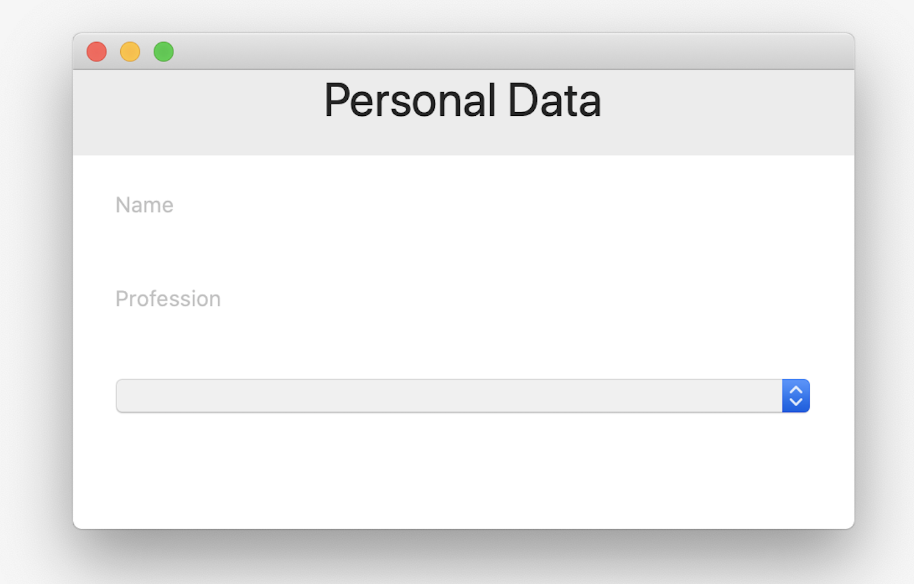
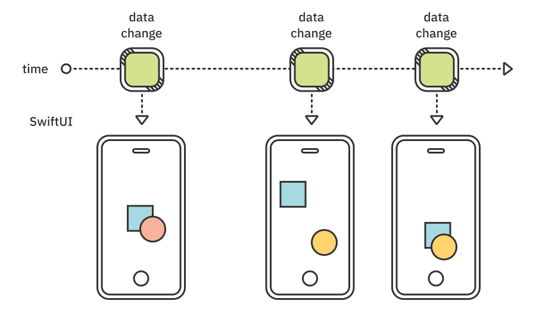
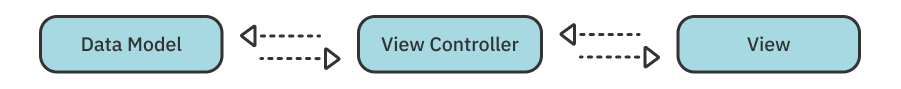
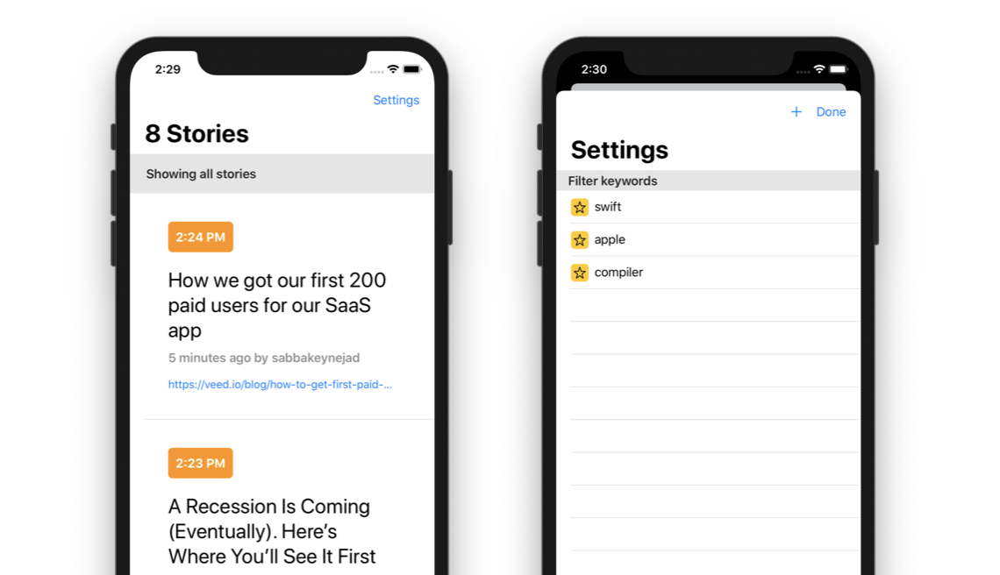
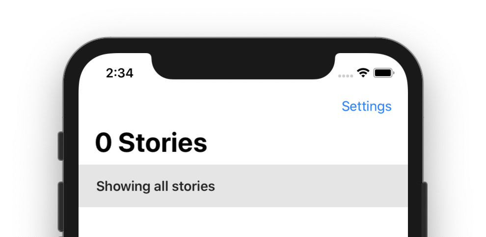
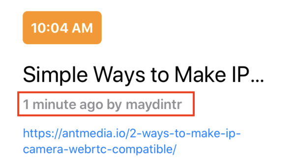
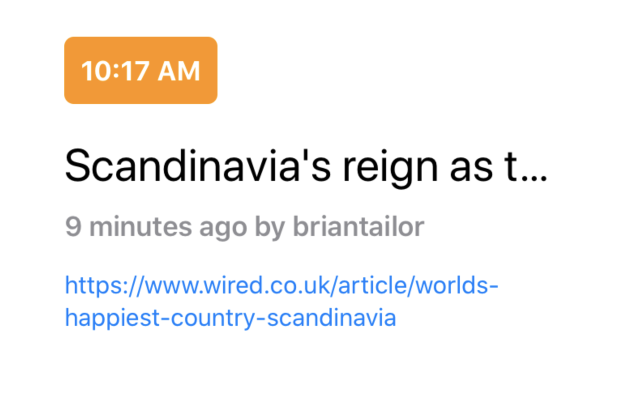
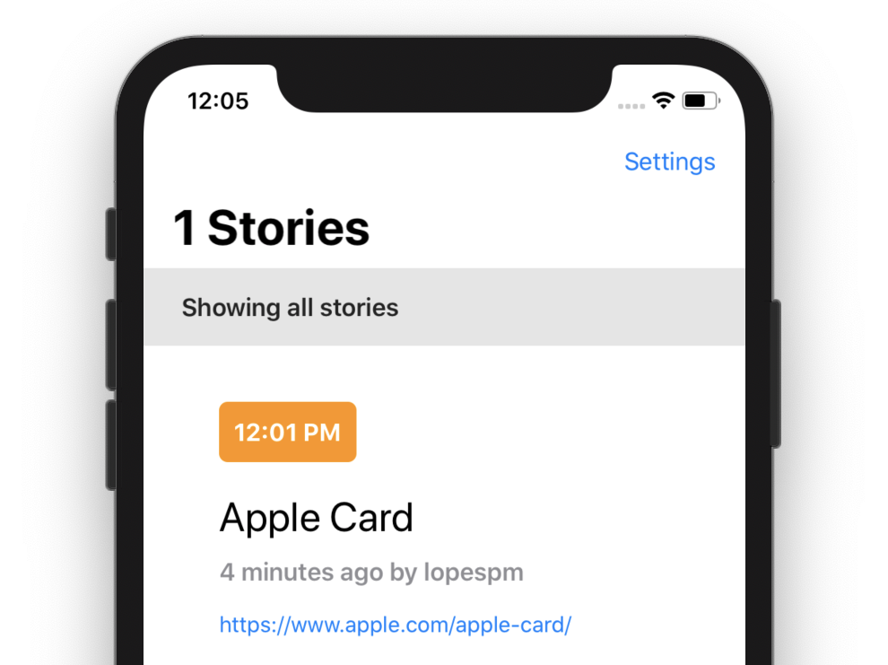

第15章：实践：Combine和SwiftUI¶
SwiftUI是苹果宣布构建应用程序用户界面的最新技术。这与旧的UIKit和AppKit框架大相径庭。它为构建用户界面提供了非常精简且易于读写的语法。
Note
如果您已经精通SwiftUI，您可以直接跳转到“新闻入门"。
SwiftUI语法清楚地表示您想要构建的视图层次结构：
HStack(spacing: 10) {
Text("My photo")
Image("myphoto.png")
.padding(20)
.resizable()
}
您可以轻松地直观地解析层次结构。HStack视图——水平堆栈——包含两个子视图：Text视图和Image视图。
每个视图都可以有一个修饰符列表——这是您在视图上调用的方法。在上面的示例中，您可以使用视图修饰符padding(20)在图像周围添加20个填充点。此外，您还可以使用resizable()来调整图像内容的大小。
SwiftUI还统一了构建跨平台UI的方法。例如，Picker控件在iOS应用程序中显示一个新的模态视图，允许用户从列表中选择项目，但在macOS上，同一Picker控件会显示一个Dropbox。
数据表单的快速代码示例可以是这样的：
VStack {
TextField("Name", text: $name)
TextField("Proffesion", text: $profession)
Picker("Type", selection: $type) {
Text("Freelance")
Text("Hourly")
Text("Employee")
}
}
此代码将在iOS上创建两个单独的视图。类型选择器控件将是一个将用户带到一个单独的屏幕的按钮，其中包含以下选项列表：

然而，在macOS上，SwiftUI将考虑Mac上丰富的UI屏幕空间，并创建一个带有下拉菜单的单一表单：

最后，在SwiftUI中，屏幕上呈现的用户界面是您所在状态的函数。您维护此状态的单个副本，称为“真相来源"，并且UI正在动态地从该状态派生。幸运的是，组合发布者可以轻松地插入SwiftUI视图的数据源。
你好，SwiftUI!¶
如上一节所述，在使用SwiftUI时，您可以声明性地描述用户界面，并将渲染留给框架。
您为UI声明的每个视图——文本标签、图像、形状等——都符合View协议。View的唯一要求是一个叫做body的属性。
每当您更改数据模型时，SwiftUI都会询问您的每个视图的当前body表示。这可能会根据您最新的数据模型变化而变化。然后，框架通过仅计算受模型更改影响的视图来构建视图层次结构，以便在屏幕上呈现，从而产生高度优化和有效的绘图机制。
实际上，SwiftUI使UI“快照"是由数据模型的任何更改触发的：

在本章中，您将完成一些任务，这些任务涵盖了Combine和SwiftUI之间的互操作以及一些SwiftUI基础知识。
内存管理¶
信不信由你，上述所有内容的一个重要组成部分是内存管理在UI中工作方式的转变。
没有数据重复¶
让我们看看这意味着什么的例子。使用UIKit/AppKit时，您会用大笔画将代码分隔在数据模型、某种控制器和视图之间：

这三种类型可以有几个类似的功能。它们包括数据存储、支持可变性、可以是引用类型等。
假设你想在屏幕上显示当前的天气。在本例中，假设模型类型是一个名为Weather的结构，并将当前条件存储在名为conditions文本属性中。要向用户显示该信息，您需要创建一个另一种类型的实例，即UILabel，并将conditions值复制到标签的text属性中。
现在，您有了所使用的值的两个副本。 一个在您的模型类型中，另一个存储在UILabel中，只是为了在屏幕上显示它：

text和conditions之间没有联系或绑定。您只需要将String值复制到您需要的任何地方。
现在，您已将依赖项添加到用户界面中。屏幕上信息的新鲜度取决于Weather.conditions。每当conditions属性发生变化时，您有责任使用Weather.conditions的新副本手动更新标签的text属性。
SwiftUI无需复制数据，以便在屏幕上显示数据。能够从用户界面中卸载数据存储，使您可以在模型中的单个位置有效地管理数据，并且永远不会让您的应用程序用户在屏幕上看到陈旧的信息。
减少“控制"你的观点的必要性¶
作为额外的奖励，消除模型和视图之间需要“胶水"代码，您还可以摆脱大部分视图控制器代码！
在这一章中，您将学习：
- 简要介绍用于构建声明性UI的
SwiftUI语法的基础知识。 - 如何声明各种类型的
UI输入，并将其连接到他们的“真相来源"。 - 如何使用
Combine构建数据模型并将数据管道到SwiftUI中。
Note
如果您想了解有关SwiftUI的更多信息，请考虑通过教程查看SwiftUI，以获得深入的学习体验。
现在，对于我们的专题介绍：与SwiftUI相结合！
开始使用"新闻"¶
本章的入门项目已经包含一些代码，以便您可以专注于编写连接Combine和SwiftUI的代码。
该项目还包括一些文件夹，您可以在其中找到以下内容：
App包含主要app类型。- 网络包括上一章完成的黑客新闻
API。 - 模型是您可以找到简单的模型类型的地方，如
Story、FilterKeyword和Settings。此外，这是ReaderViewModel居住的地方，这是主要新闻阅读器视图使用的模型类型。 View包含应用程序视图，在View/Helpers中，您将找到一些简单的可重用组件，如按钮、徽章等。- 最后，在
Util中，有一个助手类型，允许您轻松地将JSON文件读入/写入/写入磁盘。
完成的项目将显示黑客新闻故事列表，并允许用户管理关键字过滤器：

管理视图状态的第一味觉¶
构建并运行入门项目，您将在屏幕上看到一个空表格和一个名为"Settings"的条形按钮：

这就是你开始的地方。要了解通过数据更改与用户界面交互的工作原理，您将使设置按钮在点击时显示SettingsView。
打开View/ReaderView.swift，其中包含显示主应用程序界面的ReaderView视图。
该类型已经包含一个名为 presentingSettingsSheet属性，这是一个简单的布尔值。更改此值将显示或关闭设置视图。向下滚动浏览源代码，找到注释// Set presentingSettingsSheet to true here。
此注释位于设置按钮回调中，因此这是显示设置视图的完美位置。将注释替换为：
self.presentingSettingsSheet = true
添加此行后，您将看到以下错误：

事实上，self是不可变的，因为视图body是一个动态属性，因此不能突变ReaderView。
SwiftUI提供了许多内置属性包装器，以帮助您指示给定属性是您状态的一部分，对这些属性的任何更改都应触发新的UI“快照"。
让我们看看这在实践中意味着什么。调整普通的旧presentingSettingsSheet属性，使其看起来如下：
@State var presentingSettingsSheet = false
@State属性包装：
- 将属性存储移出视图，因此修改
presentingSettingsSheet不会改变self。 - 将属性标记为本地存储。换句话说，它表示数据块由视图拥有。
- 向名为
$presentingSettingsSheet的ReaderView添加发布者（有点像@Published所做的），您可以使用该发布者订阅属性或将其绑定到UI控件或其他视图。
一旦您将@State添加到presentingSettingsSheet中，错误将清除，因为编译器知道您可以从非突变上下文修改此特定属性。
最后，要使用 presentingSettingsSheet，您需要声明新状态如何影响用户界面。在这种情况下，您将向视图层次结构中添加sheet(...)视图修饰符，并将$presentingSettingsSheet绑定到工作表中。每当您更改presentingSettingsSheet，SwiftUI都会根据布尔值接受当前值并呈现或关闭您的视图。
找到注释// Present the Settings sheet here，并将其替换为：
.sheet(isPresented: self.$presentingSettingsSheet, content: {
SettingsView()
})
sheet(isPresented:content:)修饰符需要Bool发布者和视图，以便在演示文稿发布者发出true时呈现。
构建并运行项目。轻点"Settings"，您的新演示文稿将显示目标视图：

获取最新故事¶
接下来，是时候回到一些组合代码了。在本节中，您将组合现有的ReaderViewModel并将其连接到API网络类型。
打开Model/ReaderViewModel.swift。在顶部，插入：
import Combine
当然，此代码将允许您在ReaderViewModel.swift中使用组合类型。现在，将新的subscriptions属性添加到ReaderViewModel以存储您的所有订阅：
private var subscriptions = Set<AnyCancellable>()
有了所有这些扎实的准备工作，现在是时候创建一个新方法并参与网络API了。将以下空方法添加到ReaderViewModel：
func fetchStories() {
}
在此方法中，您将订阅API.stories()，并将服务器响应存储在模型类型中。您应该熟悉上一章中的这种方法。
在fetchStories()中添加以下内容：
api
.stories()
.receive(on: DispatchQueue.main)
你使用receive(on:)操作符接收主队列上的任何输出。可以说，您可以将线程管理留给API的使用者。然而，由于在ReaderViewModel的情况下，这肯定是ReaderView，您可以在这里优化并切换到主队列，以准备提交对UI的更改。
接下来，您将使用sink(...)订阅者来存储模型中的故事和任何发出的错误。附录：
.sink(receiveCompletion: { completion in
if case .failure(let error) = completion {
self.error = error
}
}, receiveValue: { stories in
self.allStories = stories
self.error = nil
})
.store(in: &subscriptions)
首先，您检查completion是否失败。如果是这样，您将关联的错误存储在self.error中。如果您从故事发布者那里收到数值，您可以将它们存储在self.allStories。
这是您将在本节中添加到模型中的所有逻辑。fetchStories()方法现已完成，您可以在屏幕上显示ReaderView后立即“启动"模型。
为此，请打开App/App.swift，并向ReaderView添加一个新的 onAppear(...)视图修饰符，如下所示：
ReaderView(model: viewModel)
.onAppear {
viewModel.fetchStories()
}
目前，ReaderViewModel并没有真正连接到ReaderView，因此您不会在屏幕上看到任何变化。但是，要快速验证一切正常，请执行以下操作：返回Model/ReaderViewModel.swift，并将didSet处理程序添加到allStories属性中：
private var allStories = [Story]() {
didSet {
print(allStories.count)
}
}
运行该应用并观察控制台。您应该会看到这样的令人放心的输出：
1
2
3
4
...
您可以删除刚刚添加的 didSet 处理程序，以防您不想在每次运行应用程序时都看到该输出。
将ObservableObject用于模型类型¶
ObservableObject是一种协议，可以使普通的旧数据模型可观察，并让观察的SwiftUI View知道数据已更改，因此它能够重建任何依赖于这些数据的用户界面。
该协议要求类型实现名为objectWillChange的发布者，该发布者在类型状态即将更改时随时发出。
原型中已经有一个该发布者的默认实现，因此在大多数情况下，您不必向数据模型添加任何内容。当您将ObservableObject一致性添加到类型中时，默认协议实现将在您的任何@Published属性发出时自动发出！
打开ReaderViewModel.swift，并将ObservableObject一致性添加到ReaderViewModel中，所以它看起来是这样的：
class ReaderViewModel: ObservableObject {
接下来，您需要考虑数据模型的哪些属性构成其状态。您当前在sink(...)订阅者中更新的两个属性是allStories和error。你会认为这些国家变化是值得的。
Note
还有第三个属性称为filter。暂时忽略它，你稍后会再来。
调整allStories以包含@Published属性包装器：
@Published private var allStories = [Story]()
然后，对error也这样做：
@Published var error: API.Error? = nil
本节的最后一步是，由于ReaderViewModel现在符合ObservableObject，实际上将数据模型绑定到ReaderView。
打开View/ReaderView.swift并将@ObservedObject属性包装器添加到var model: ReaderViewModel行，如下所示：
@ObservedObject var model: ReaderViewModel
您绑定模型，以便每当其状态发生变化时，您的视图都会收到最新数据并生成其新的UI“快照"。
@ObservedObject包装器可以做到以下几点：
- 从视图中删除属性存储，并使用与原始模型的绑定。换句话说，它不会复制数据。
- 将该属性标记为外部存储。换句话说，它表示该数据不归视图所有。
- 与
@Published和@State，它向属性添加了一个发布者，以便您可以订阅它和/或在视图层次结构下进一步绑定到它。
通过添加@ObservedObject，您使model变得动态。这意味着当您的视图模型从黑客新闻服务器获取故事时，它将获得所有更新。事实上，现在运行该应用程序，当模型获取故事时，您将看到视图会刷新：

显示错误¶
您还将以显示获取的故事的方式显示错误。目前，视图模型在其error属性中存储任何错误，您可以将其绑定到屏幕上的UI警报。
打开View/ReaderView.swift并找到注释 // Display errors here。 将此注释替换为以下代码以将模型绑定到警报视图：
.alert(item: self.$model.error) { error in
Alert(
title: Text("Network error"),
message: Text(error.localizedDescription),
dismissButton: .cancel()
)
}
alert(item:)修饰符控制屏幕上的警报演示文稿。它需要一个带有称为item可选输出的绑定。每当该绑定源发出非nil值时，UI都会显示警报视图。
默认情况下，模型的error属性为nil，只有当模型从服务器获取故事时遇到错误时，才会设置为非nil错误值。这是显示警报的理想场景，因为它允许您将error直接绑定为alert(item:)输入。
要测试这一点，请打开Network/API.swift并将baseURL属性修改为无效URL，例如https://123hacker-news.firebaseio.com/v0/。
再次运行该应用程序，一旦对故事端点的请求失败，您将看到错误警报：

在继续并完成下一节之前，请花点时间将更改恢复到baseURL，以便您的应用程序再次成功连接到服务器。
订阅外部发布者¶
有时候，您并不想沿着ObservableObject/ObservedObject这条路走下去，因为您只想订阅一个发布者，并在SwiftUI视图中接收其值。 对于像这样简单的情况，不需要创建额外的类型-您可以简单地使用onReceive（_）视图修饰符。它允许您直接从视图订阅发布者。
如果您现在运行该应用程序，您将看到每个故事都与故事作者的姓名一起包含一个相对时间：

那里的相对时间有助于立即向用户传达故事的“新鲜度"。然而，一旦在屏幕上呈现，信息在一段时间后就会变质。如果用户打开该应用程序很长时间，“1分钟前"可能会关闭相当长一段时间。
在本节中，您将使用计时器发布者定期触发UI更新，以便每行可以重新计算和显示正确的时间。
代码现在的工作原理如下：
ReaderView有一个名为currentDate的属性，该属性与创建视图的当前日期一起设置一次。- 故事列表中的每一行都包含一个
PostedBy(time:user:currentDate:)视图，该视图使用currentDate的值编译作者和时间信息。
要定期“刷新"屏幕上的信息，您将添加一个新的计时器发布者。每次它发出时，您都会更新currentDate。此外，正如您可能已经猜到的那样，您将将currentDate添加到视图的状态中，以便在更改时触发新的UI“快照"。
要与发布者合作，请首先在ReaderView.swift的顶部添加：
import Combine
然后，将新的发布者属性添加到ReaderView，该属性创建一个新的计时器发布者，一旦有人订阅它，就可以开始：
private let timer = Timer.publish(every: 10, on: .main, in: .common)
.autoconnect()
.eraseToAnyPublisher()
正如您在书中早些时候已经了解到的那样，Timer.publish(every:on:in:)返回一个可连接的发布者。这是一种“休眠"发布者，需要订阅者连接到它才能激活它。在上面，您使用autoconnect()指示发布者在订阅时自动“唤醒"。
现在剩下的是每次计时器发出时更新currentDate。您将使用名为onReceive(_)的SwiftUI修饰符，其行为与sink(receiveValue:)订阅者非常相似。向下滚动一点，找到注释// Add timer here，并将其替换为：
.onReceive(timer) {
self.currentDate = $0
}
计时器会发出当前日期和时间，因此您只需将该值分配给currentDate。这样做会产生一个有点熟悉的错误：

当然，发生这种情况是因为您无法从非突变上下文中突变属性。和以前一样，您将通过将currentDate视图的本地存储状态来解决此困境。
像这样向属性添加@State属性包装器：
@State var currentDate = Date()
这样，对currentDate的任何更新都将触发新的用户界面“快照"，并将迫使每行重新计算故事的相对时间，并在必要时更新文本。
再运行一次该应用程序并保持打开状态。在脑海中记下头条新闻发布的时间，以下是我尝试时所拥有的：

等待至少一分钟，您将看到可见的行会随着当前时间更新其信息。橙色时间徽章仍将显示故事发布的时间，但标题下方的文本将更新为正确的“...分钟前"文本：

除了在您的视图上拥有发布者属性外，您还可以通过视图的初始化器或环境将Combine模型中的任何发布者注入视图中。然后，这只是以与上述相同的方式使用onReceive(...)的问题。
初始化应用程序的设置¶
在本章的这一部分中，您将继续使Settings视图正常工作。在处理用户界面本身之前，您需要先完成Settings类型实现。
打开Model/Settings.swift，你会看到，目前，这个类型几乎是骨架。它包含一个属性，其中包含FilterKeyword值的列表。
现在，打开Model/FilterKeyword.swift。FilterKeyword是一种助手模型类型，它包装了一个关键字，用作主阅读器视图中故事列表的过滤器。它符合Identifiable，这需要一个唯一标识每个实例的id属性，例如当您在SwiftUI代码中使用这些类型时。如果您分别阅读Network/API.swift和Model/Story.swift中的API.Error和Story定义，您将看到这些类型也符合Identifiable。
我们再去玩一次旋转木马吧。您需要将普通的旧模型Settings转换为现代类型，以便与你的Combine和SwiftUI代码一起使用。
首先在Model/Settings.swift的顶部添加：
import Combine
然后，通过向keywords添加@Published属性包装器将发布者添加到关键字中，因此它看起来如下：
@Published var keywords = [FilterKeyword]()
现在，其他类型可以订阅Settings的当前关键字。您还可以通过管道将关键字列表传递到接受绑定的视图。
最后，为了启用对Settings的观察，请使类型符合ObservableObject如下所示：
final class Settings: ObservableObject {
无需添加任何其他内容来使ObservableObject一致性发挥作用。默认实现将在$keywords发布者发布时随时发出。
这就是您如何在几个简单的步骤中将Settings转换为类固醇上的模型类型。现在，您可以将其插入应用程序中其余的被动代码中。
要绑定应用程序的Settings，您将在应用程序中实例化它。打开App/App.swift并向HNReader添加新属性：
let userSettings = Settings()
像往常一样，您还需要一个可取消的集合来存储您的订阅。在HNReader中添加另一个属性：
private var subscriptions = Set<AnyCancellable>()
现在，您可以将Settings.keywords绑定到ReaderViewModel.filter，这样主视图不仅会在用户编辑关键字列表时收到初始列表，还会收到更新列表。
您将创建该绑定，同时对HNReader进行空格。为该类型添加一个新的初始化器：
init() {
userSettings.$keywords
.map { $0.map { $0.value } }
.assign(to: \.filter, on: viewModel)
.store(in: &subscriptions)
}
您订阅userSettings.$keywords，该关键字输出[FilterKeyword]，并通过获取每个关键字的value属性将其映射到[String]。然后，您将生成的值分配给viewModel.filter。
现在，每当您更改Settings.keywords的内容时，与视图模型的绑定最终都会导致生成ReaderView的新UI“快照"，因为视图模型是其状态的一部分。
到目前为止，绑定有效。但是，您仍然需要添加filter属性才能成为ReaderViewModel状态的一部分。您将这样做，这样，每次更新关键字列表时，新数据都会转发到视图中。
为此，请打开Model/ReaderViewModel.swift，然后像这样添加@Published属性包装器filter：
@Published var filter = [String]()
从Settings到视图模型以及从视图到视图的完整绑定现已完成！
这非常方便，因为在下一节中，您将把Settings视图连接到Settings模型，用户对关键字列表的任何更改都将触发整个绑定和订阅链，最终以刷新主应用程序视图故事列表：

编辑关键词列表¶
在本章的最后一部分，您将了解SwiftUI环境。该环境是一个共享的发布者池，会自动注入视图层次结构中。
系统环境¶
该环境包含系统注入的发布者，如当前日历、布局方向、区域设置、当前时区等。如您所见，这些都是可能随着时间的推移而改变的价值观。因此，如果您声明视图的依赖项，或者如果您将它们包含在状态中，则当依赖项发生变化时，视图将自动重新呈现。
要尝试观察其中一个系统设置，请打开View/ReaderView.swift，并向ReaderView添加一个新属性：
@Environment(\.colorScheme) var colorScheme: ColorScheme
您使用@Environment属性包装器，它定义了环境的哪个键应该绑定到colorScheme属性。现在，此属性是您视图状态的一部分。每当系统外观模式在浅色和深色之间发生变化时，SwiftUI都会重新呈现您的视图。
此外，您将可以访问视图正文中的最新配色方案。因此，您可以在浅色和深色模式下以不同的方式渲染它。
向下滚动并找到设置故事链接.foregroundColor(Color.blue)颜色的行。将该行替换为：
.foregroundColor(self.colorScheme == .light ? .blue : .orange)
现在，根据colorScheme的当前值，链接将是蓝色或橙色。
通过将系统外观更改为深色来尝试这个新的代码奇迹。在Xcode中，打开Debug ► View Debugging ► Configure Environment Overrides...或点击Xcode底部工具栏上的环境覆盖按钮。然后，打开接口样式旁边的开关。

随意保持黑暗外观模式。然而，在本章的剩余时间里，我会切换回浅色外观，因为它会更好地打印书中的屏幕截图。
自定义环境对象¶
尽管通过@Environment(_)观察系统设置很酷，但这并不是SwiftUI环境所能提供的全部。事实上，你也可以对你的物体进行环境化！
这非常方便。特别是当您有深度嵌套视图层次结构时。将模型或其他共享资源插入环境中，无需通过多个视图注入依赖性，直到您到达实际需要数据的深度嵌套视图。
您在视图环境中插入的对象会自动可用于该视图的任何子视图及其所有子视图。
这听起来是一个很好的机会，可以将用户的Settings与应用程序的所有视图共享，以便他们可以使用用户的故事过滤器。
将依赖项注入所有视图的地方是主应用程序文件。这是您之前创建Settings的userSettings实例并将其$keywords绑定到ReaderViewModel的地方。现在，您还将向环境中注入userSettings。
打开App/App.swift，通过添加以下ReaderView(model: viewModel)将environmentObject视图修饰符添加到ReaderView：
.environmentObject(userSettings)
environmentObject修饰符是一个视图修饰符，用于在视图层次结构中插入给定对象。由于您已经有一个Settings实例，您只需将该实例发送到环境中，您就完成了。
接下来，您需要将环境依赖项添加到要使用自定义对象的视图中。 打开View/SettingsView.swift并使用 @EnvironmentObject 包装器添加一个新属性：
@EnvironmentObject var settings: Settings
settings属性将自动填充环境中的最新用户设置。
对于您自己的对象，您不需要像系统环境那样指定密钥路径。@EnvironmentObject将把属性类型（在本例中是Settings）与存储在环境中的对象匹配，并找到正确的对象。
现在，您可以像使用任何其他视图状态一样使用settings.keywords。您可以直接获取该值，订阅它，也可以将其绑定到其他视图。
要完成SettingsView功能，您将显示关键字列表，并启用从列表中添加、编辑和删除关键字。
找到以下行：
ForEach([FilterKeyword]()) { keyword in
并替换为：
ForEach(settings.keywords) { keyword in
更新后的代码将使用屏幕上列表的过滤器关键字。然而，这仍然会显示一个空列表，因为用户没有办法添加新关键字。
启动项目包含一个用于添加关键字的视图。因此，当用户点击+按钮时，您只需展示它。+按钮操作设置为在SettingsView addKeyword()。
滚动到私有addKeyword()方法，并在其中添加：
presentingAddKeywordSheet = true
presentingAddKeywordSheet是一个已发布的属性，与您本章早些时候已经合作过的属性非常相似，用于显示警报。您可以在源代码中略微向上看到演示文稿声明：.sheet(isPresented: $presentingAddKeywordSheet)
要尝试如何手动向给定视图注入对象，请切换到View/ReaderView.swift，并找到您呈现SettingsView的位置——这是一行，您只需创建一个这样的新实例：SettingsView()。
就像您将设置注入ReaderView一样，您也可以在这里注入它们。向ReaderView添加新属性：
@EnvironmentObject var settings: Settings
然后，直接在SettingsView()下添加.environmentObject修饰符：
.environmentObject(self.settings)
现在，您声明了对Settings的ReaderView依赖项，并通过环境将该依赖项传递给SettingsView。在这种情况下，您也可以将其作为参数传递给SettingsView的init。
在继续之前，请再运行一次应用程序。您应该能够点击设置并看到SettingsView弹出窗口。
现在，切换回View/SettingsView.swift，并按照最初的意图完成列表编辑操作。
在 sheet(isPresented: $presentingAddKeywordSheet) 中，已经为您创建了一个新的 AddKeywordView。 这是一个包含在启动项目中的自定义视图，它允许用户输入一个新的关键字并点击一个按钮将其添加到列表中。
AddKeywordView回电，当用户点击按钮添加新关键字时，回电会调用。在AddKeywordView的空完成回调中添加：
let new = FilterKeyword(value: newKeyword.lowercased())
self.settings.keywords.append(new)
self.presentingAddKeywordSheet = false
您创建一个新关键字，将其添加到用户设置中，最后关闭显示的工作表。
请记住，将关键字添加到此处的列表中将更新设置模型对象，进而更新阅读器视图模型并刷新ReaderView。全部自动按照代码中声明。
要使用SettingsView结束，让我们添加删除和移动关键字。查找// List editing actions，并将其替换为：
.onMove(perform: moveKeyword)
.onDelete(perform: deleteKeyword)
当用户在列表中上下移动其中一个关键字时，此代码将moveKeyword()设置为处理程序，当用户向右滑动以删除关键字时，deleteKeyword()设置为处理程序。
在当前为空的 moveKeyword(from:to:) 方法中，添加：
guard let source = source.first,
destination != settings.keywords.endIndex else { return }
settings.keywords
.swapAt(source,
source > destination ? destination : destination - 1)
在里面deleteKeyword(at:)添加：
settings.keywords.remove(at: index.first!)
这真的是您在列表中启用编辑所需的一切！最后一次构建和运行该应用程序，您将能够完全管理故事过滤器，包括添加、移动和删除关键字：

此外，当您导航回故事列表时，您将看到这些设置与您的订阅和绑定一起在整个应用程序中传播，并且列表仅显示与您的过滤器匹配的故事。标题还将显示匹配故事的数量：

挑战¶
本章包括两个完全可选的SwiftUI练习，您可以选择完成。您也可以把它们放在一边供以后使用，并在下一章中转到更令人兴奋的组合主题。
挑战1：在阅读器视图中显示过滤器¶
在第一个挑战中，您将在ReaderView的故事列表标题中插入过滤器关键字列表。目前，标题始终显示“显示所有故事"。更改该文本以显示关键字列表，以防用户添加了关键字列表，例如：

挑战2：在应用程序启动之间坚持过滤器¶
启动器项目包括一种名为JSONFile助手类型，它提供了两种方法：loadValue(named:)和save(value:named:)
使用此类型：
- 每当用户修改过滤器时，通过向
Settings.keywords添加didSet处理程序来保存磁盘上的关键字列表。 - 在
Settings.init()中从磁盘加载关键字。
这样，用户的过滤器将在应用程序启动之间保持不变，就像在真实应用程序中一样。
如果您不确定这些挑战的解决方案，或需要一些帮助，请随时查看projects/challenge文件夹中的已完成项目。
关键点¶
使用SwiftUI，您的UI是您所在状态的函数。您通过提交对声明为视图状态的数据以及其他视图依赖项的数据进行更改来渲染自己。您学习了在SwiftUI中管理状态的各种方法：
- 使用
@State将本地状态添加到视图中，使用@ObservedObject在组合代码中添加对外部ObservableObject的依赖关系。 - 使用
onReceive视图修饰符直接订阅外部发布者。 - 使用
@Environment向系统提供的环境设置之一添加依赖项，并使用@EnvironmentObject为您自己的自定义环境对象添加依赖项。
接下来去哪？¶
恭喜你用SwiftUI和Combine变得肮脏！我希望你现在意识到两者之间的联系是多么紧密和强大，以及Combine如何在SwiftUI的被动功能中发挥关键作用。
尽管您应该始终致力于编写无错误的应用程序，但世界很少如此完美。这正是您将在下一章中学习如何在Combine中处理错误的原因。